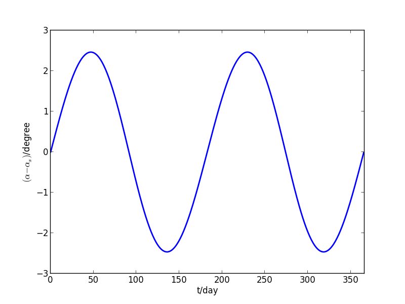

太阳的周年视运动
地球绕太阳公转，那么相对于地球，太阳是如何运动的呢？当然也是相对于地球做周期性近圆周运行，但由于黄赤交角的存在，太阳的周年运动对地球的气候、季节带来了决定性的影响。
为分析太阳相对地球的运动，要在地球赤道坐标系中进行分析，见下图。 该坐标系以地球中心 O 为中心，以地球赤道面为主平面，以春分点 C 为起点。蓝色的轨道就是太阳 S 在该球面坐标系中的轨迹，简化为圆。PQ是球面的两极，T 是太阳 S 在赤道上的投影。图中的 i 是太阳轨道面与赤道面的夹角，即黄赤交角，α 是太阳黄经，αs 和 δs 就是太阳的赤经和赤纬了。
黄赤交角 i 是固定的，黄经根据时间确定，下面推导太阳赤经和赤纬的表达式。在球面三角形 CST 中，∠T 是直角，利用球面三角中的正弦定理，可得：
\begin{equation}
\frac{\sin T}{\sin\alpha}=\frac{\sin i}{\sin\delta_s}
\end{equation}
因此得到赤纬的表达式：
\begin{equation}
\sin\delta_s = \sin i \sin\alpha
\end{equation}
对于赤经，同样考察球面三角形 CST,利用球面三角中的余弦公式，有：
\begin{equation}
\cos\alpha = \cos\alpha_s\cos\delta_s
\end{equation}
在球面三角形 CQS 中，∠Q=αs ，利用正弦公式，有：
\begin{equation}
\frac{\sin\alpha_s}{\sin\alpha}=\frac{\cos i}{\cos\delta_s}
\end{equation}
上两式消去 δs 后得到：
\begin{equation}
\frac{\sin\alpha_s}{\cos\alpha_s}=\frac{\cos i\sin\alpha}{\cos\alpha}
\end{equation}
显然，αs 可以用 atan2 函数求解。
现在来看看太阳赤经和赤纬在一年中的变化。
import matplotlib.pyplot as plt
from math import sin, cos, atan2, pi
import numpy as np
year = 365.2422
i = 23.43
day = np.array(range(366))
alpha = day/year*2*pi
delta_s = np.arcsin(sin(i*pi/180)*np.sin(alpha))*180/pi
plt.plot(day,delta_s,linewidth=2)
plt.xlabel('t/day')
plt.ylabel(r'$\delta_s$/degree')
plt.axis([0,366,-30,30])
plt.savefig('img/solar_delta_day.png')
alpha_s = np.arctan2(cos(i*pi/180)*np.sin(alpha),np.cos(alpha))
alpha_s[183:] += 2*pi
plt.figure()
plt.plot(day,(alpha-alpha_s)*180/pi,linewidth=2)
plt.xlabel('t/day')
plt.ylabel(r'$(\alpha-\alpha_s)$/degree')
plt.axis([0,366,-3,3])
plt.savefig('img/solar_alpha_diff_day.png')
太阳赤纬的变化见下图。其变化范围恰好为 [-i,i]，在 α 为 π/2 和 3π/2 时达到极值，这恰好对应地球的夏至和冬至，太阳直射地球的北回归线和南回归线；α 为 0 和 π 时，太阳赤纬为0，这恰好是春分和秋分，太阳直射赤道。
太阳赤纬在一年中的变化
太阳赤经在一年中从0 持续增加到 360，但是其变化并不是匀速的。而太阳黄经的变化是匀速的（不考虑地球轨道的偏心率）。下图给出了太阳黄经和赤经之差在一年中的变化。

太阳黄经和赤经差值在一年中的变化
可见黄经和赤经差值在一年中有两个周期的波动。这个波动是由于黄赤交角的存在导致的。而这个差值也是地球平太阳时和真太阳时的时差的主要来源因素（另外一个因素是地球公转轨道的偏心率）。
以上方法同样能够用于分析其他天体上看太阳的运动轨迹，如月球、火星。